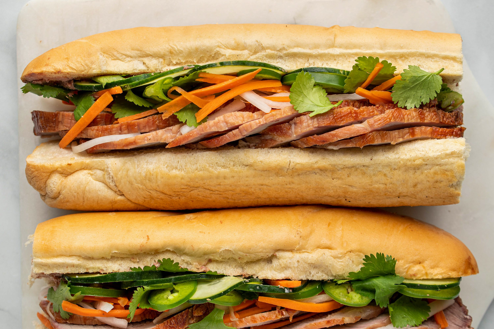

Banh Mi

Descripttion
Banh Mi is a traditional Vietnamese sandwich with a French influence that is made up of crunchy bread rolls, pickled vegetables, delectable meat,
onions, cilantro and lime juice. Sounds delicious doesnt it?? It tastes like a rich Ham sandwich and has a cult following with people queing from
morning just to grab a taste of this wonderfull food.
Ingredients
- Crunchy Bread Roll or Baguette
- Pork Tenderloin
- Pickled Carrot and Radish
- Thinly slices white onions
- Cilantro
- Salt, Pepper, Fish Sauce
- Fresh Mayonnaise and Hoisin Sauce
Steps
- Slice the pork tenderloin thinly. Add salt pepper and hoisin sauce to it.
- Let it rest at room temperature for 15 mins. Then grill it till its fully cooked through.
- Take the baguette and lightly toast it till crunchy. Cut it open and add mayonnaise to both sides.
- Take the grilled pork and scoop a healthy portion onto the bread. Add the pickled vegetables and cilantro.
- Season with fish sauce as per your liking.
HomePage
Other Recipies